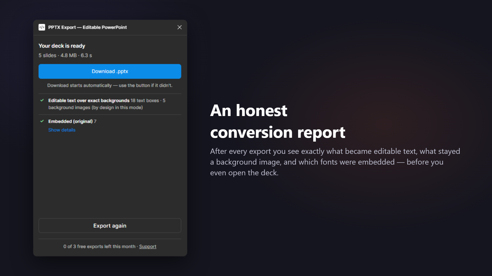
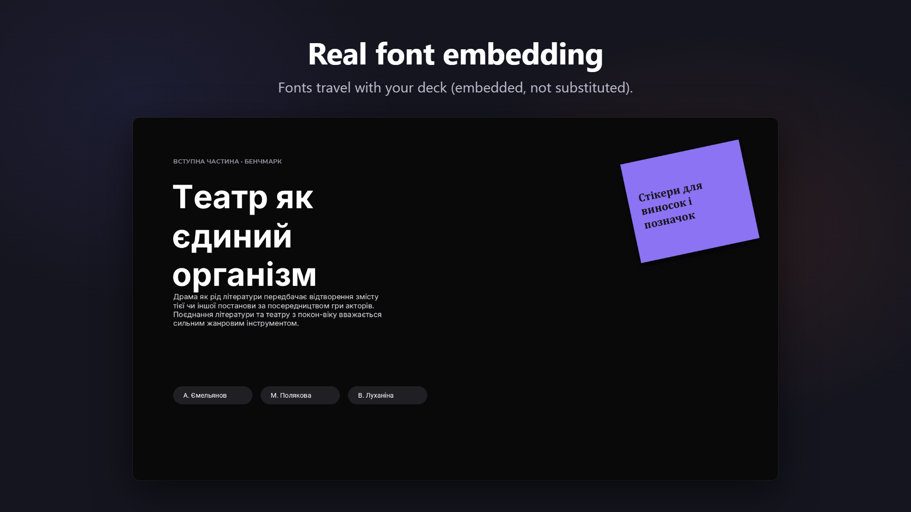
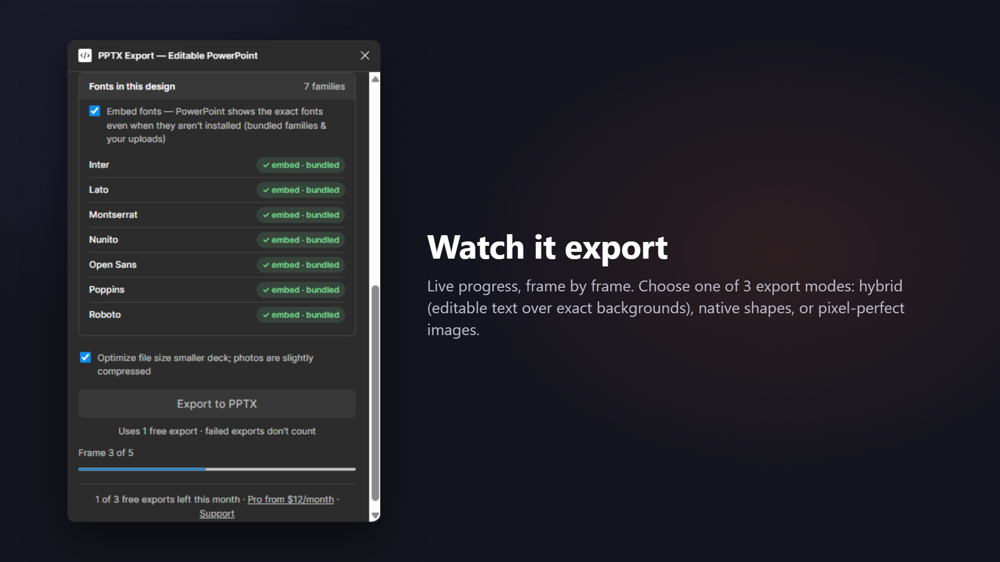
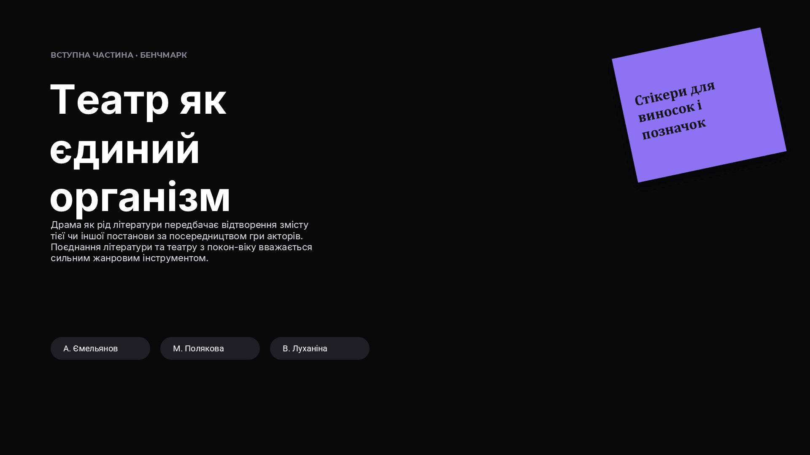

Figma → Editable PowerPoint.
Real text. Real shapes. Real fonts. Turn your Figma frames into a deck your clients can actually edit — not a stack of screenshots.
An honest conversion report — after every export
Most exporters hand you a mystery box. This plugin shows a transparent report the moment your deck is ready — of the plugins we tested, it's the only one that gives you any post-export report at all.
- ✓ Converted natively — text boxes, shapes, images
- ⚠ Rasterized — each node listed with the reason
- Aa Fonts, three ways — embedded, honestly remapped, or "needs your file"
No surprises when you open the file. You always know what your teammates will actually be able to edit.

The only plugin we tested that actually embeds fonts
Most exporters write font names into the file and hope for the best — open the deck on a machine without Inter or Montserrat, and PowerPoint silently swaps them. This plugin embeds the actual font files into the .pptx (top Google Fonts bundled, or upload your own .ttf), so the deck renders with your typography anywhere.
In July 2026 we tested the leading Figma-to-PowerPoint plugins and opened each exported file — ours was the only one where the fonts were really inside.

Pick how editable you want it
- Exact look + editable text (recommended) — pixel-exact slide backgrounds with real text boxes on top
- Fully editable — native PowerPoint shapes, gradients, lines and text; complex art falls back to images, and the report tells you exactly what and why
- Pixel-perfect images — one crisp picture per slide, nothing editable
Whatever you pick, the plugin never pretends — the report shows what stayed editable and what didn't. A staged progress bar keeps you posted; a typical 5-slide deck exports in about 6 seconds and lands under 5 MB.

This is an actual exported slide
The slide on the right was exported by the plugin and rendered straight from the .pptx — original typography, correct layout, slides in the same order as your frames.
It opens in PowerPoint, Google Slides and Keynote without repair dialogs. Text stays selectable, searchable and retypeable.

How it works
No account, no email, no API key. Your first 3 exports every month are free, straight out of the box — and failed exports don't count.
Select frames
Pick the frames you want as slides. You'll see slide thumbnails in order and a content pre-count ("18 texts · 9 shapes · 5 images") before you spend anything.
Export to PPTX
Watch the staged progress bar: frames → fonts → convert → package. A 5-frame deck exports in seconds.
Open anywhere
Download your .pptx and open it in PowerPoint, Google Slides or Keynote — slides in the same order as your frames.
Simple pricing
Free forever for occasional exports. Pro when you need more.
Free
$0
forever
- 3 exports per month
- Full quality, full report
- Embedded fonts, no watermark
- No signup
Pro
$12/month
or $69/year — save 52%
- Unlimited exports
- Everything in Free
- License key, no account needed
Guides & free tools
Everything about getting a Figma deck into PowerPoint — including the parts other tools do not mention.
How to export Figma to PowerPoint
The plugin route plus the two manual ones — PNG export and SVG paste — compared honestly.
What is inside the .pptx
Layer-by-layer mapping from Figma nodes to native PowerPoint objects, and why the files open without repair dialogs.
The conversion report
A real report, line by line, and the three questions worth asking before you send a deck.
Figma to Google Slides
The .pptx bridge into Slides — and the one caveat about embedded fonts that nobody else states.
Slide size calculator
Free tool: px ↔ inches ↔ cm ↔ EMU for every slide preset, plus the Figma frame size that matches.
Font compatibility checker
Free tool: type a font family and see whether it is embedded, remapped, or needs your file.
Ready to hand off a deck people can edit?
Editable where possible, embedded where it matters, transparent always — that's the whole promise.